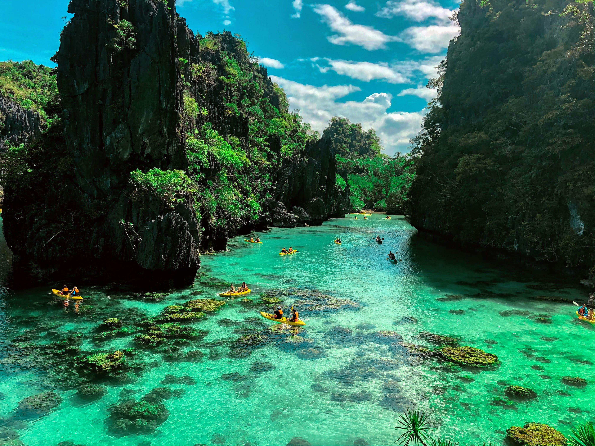

Palawan

Palawan is a beautiful island in the Philippines. It has clear blue water, tall rocks, and green forests. Visitors can enjoy swimming, kayaking, and exploring nature.

Palawan is a beautiful island in the Philippines. It has clear blue water, tall rocks, and green forests. Visitors can enjoy swimming, kayaking, and exploring nature.